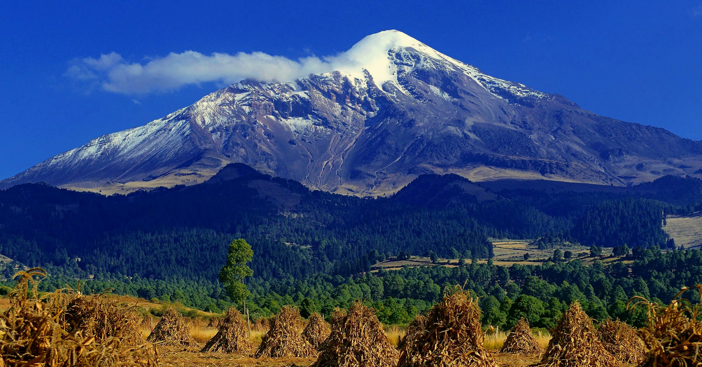
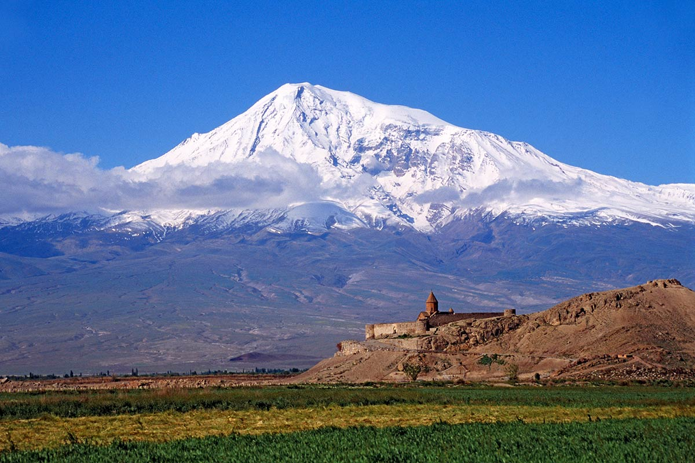
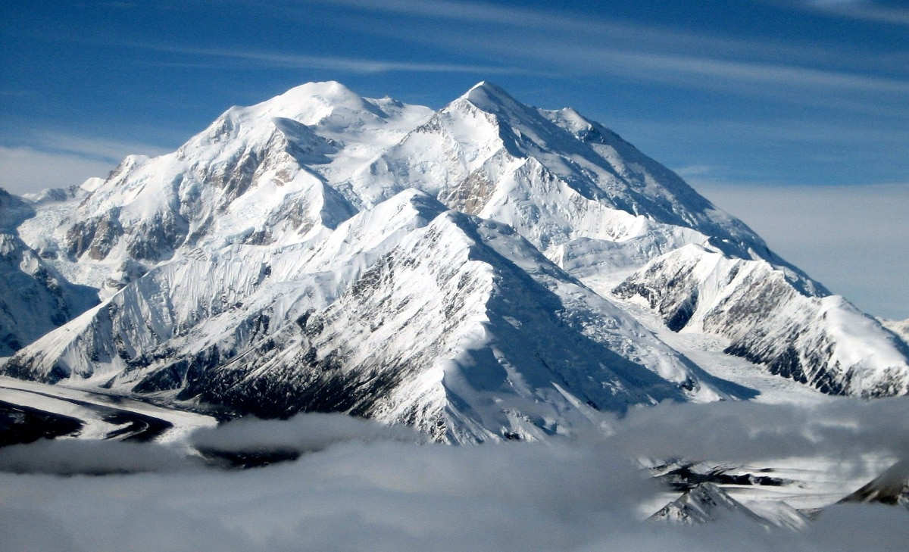
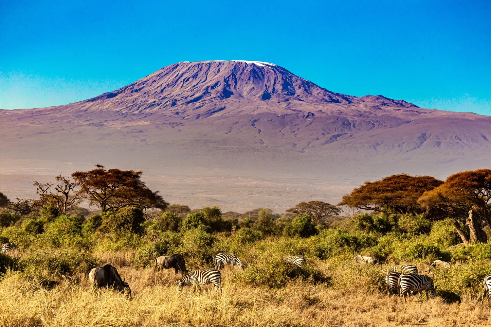
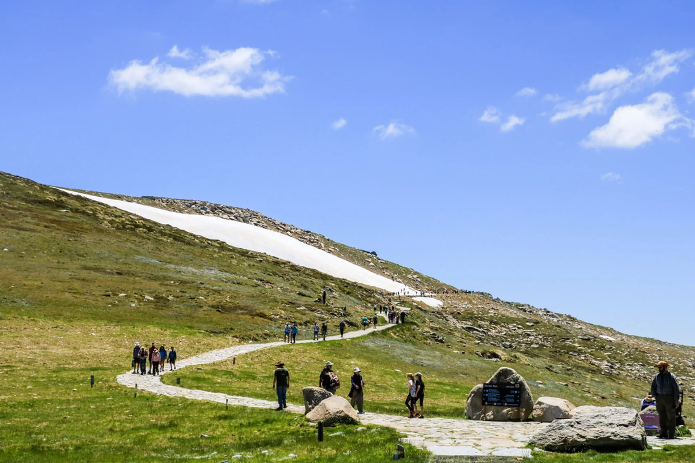

Mountain Guide
Discover the beauty of mountain peaks from around the world on our website. From the Rocky Mountains to the Alps, explore stunning visuals and find information about each peak. Relax and enjoy the peacefulness of these natural landscapes.




